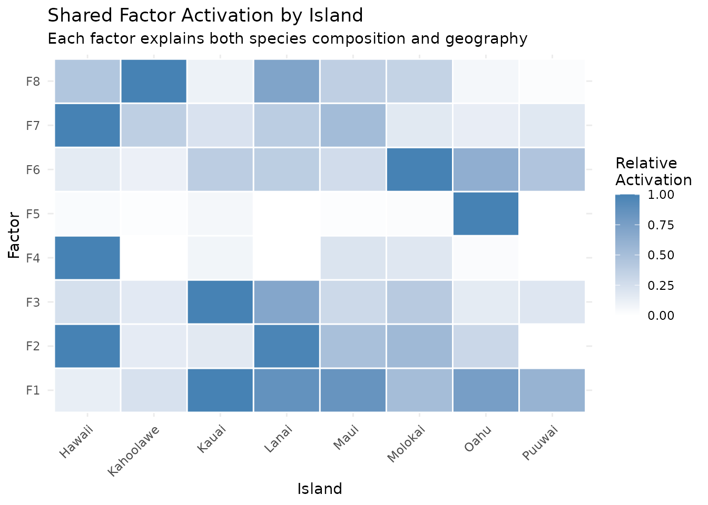
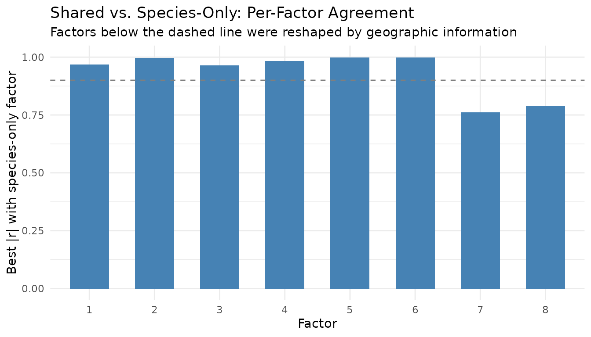
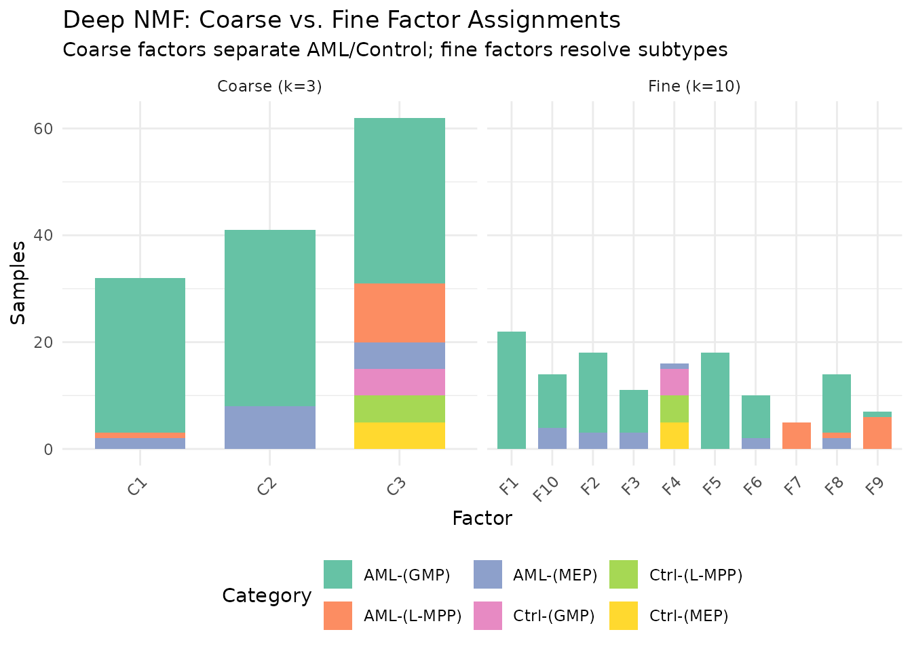
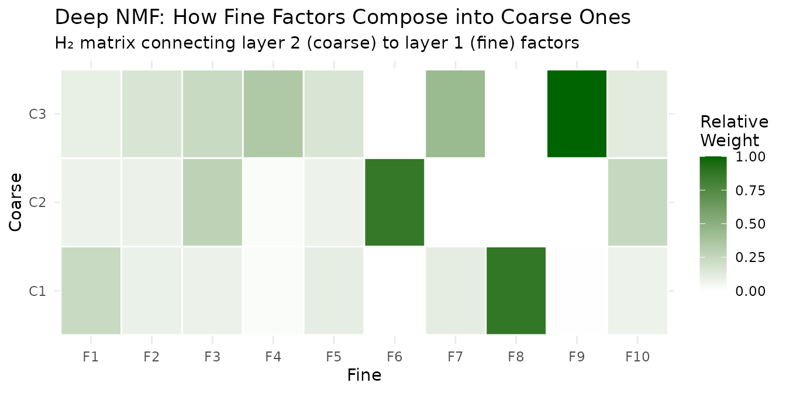
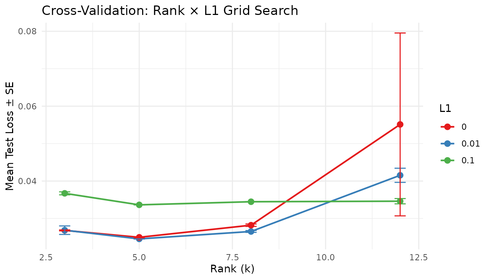

Why Factorization Graphs?
nmf() decomposes one matrix into two factors. That
covers a lot of ground — but real problems often involve richer
structure:
- Multi-modal data: Two matrices sharing the same samples should share a single latent space, not be factorized independently.
- Hierarchical decomposition: Coarse global patterns and fine local patterns live at different ranks — stacking NMF layers captures both.
- Guided factorization: Prior knowledge (class labels, reference patterns) should steer the optimization, not be bolted on afterward.
- Systematic tuning: Rank, regularization, and loss function interact in nonobvious ways — you need a principled way to search over them together.
RcppML’s factor_net() addresses all of these by treating
factorization as a directed graph of composable blocks.
You wire together inputs, layers, and merge operations, then
fit() the assembled network.
Building Blocks
| Function | Role |
|---|---|
factor_input(data) |
Wraps a dense matrix, sparse matrix, or
.spz file path as a graph input |
nmf_layer(input, k) |
NMF layer: A ≈ W diag(d) H, non-negative |
svd_layer(input, k) |
SVD/PCA layer: signed, optional centering/scaling |
factor_shared(...) |
Row-binds multiple inputs; one NMF shares H across all |
factor_concat(...) |
Stacks H matrices from parallel branches (expands rank) |
factor_add(...) |
Element-wise H addition (skip connection, same rank) |
factor_condition(input, Z) |
Appends external metadata Z as extra input rows |
Every graph is compiled with
factor_net(inputs, output, config) and executed with
fit(). The result is a factor_net_result whose
named elements give per-layer access to W, H, d, loss, and convergence
info:
inp <- factor_input(A, name = "data")
out <- nmf_layer(inp, k = 8, name = "my_nmf")
net <- factor_net(inp, out, factor_config(maxit = 100))
result <- fit(net)
result$my_nmf$W # m x k
result$my_nmf$H # k x n
result$my_nmf$d # length-k scaling vectorPer-factor overrides for regularization, constraints, and target
regularization are set through W() and
H():
Example 1: Graph ≡ Plain NMF
The simplest graph is one input feeding one NMF layer — identical to
calling nmf().
data(aml)
# Plain nmf()
set.seed(42)
direct <- nmf(aml, k = 6, seed = 42, maxit = 100)
# Same thing as a factor graph
inp <- factor_input(aml, name = "methylation")
out <- nmf_layer(inp, k = 6, name = "nmf1")
net <- factor_net(inp, out, factor_config(maxit = 100, seed = 42))
graph_result <- fit(net)
# Compare
W_gr <- graph_result$nmf1$W
H_gr <- graph_result$nmf1$H
d_gr <- graph_result$nmf1$d
recon_graph <- W_gr %*% diag(d_gr) %*% H_gr
mse_graph <- mean((as.matrix(aml) - recon_graph)^2)
knitr::kable(
data.frame(
Method = c("nmf()", "factor_net"),
MSE = c(evaluate(direct, aml), mse_graph),
Iterations = c(direct@misc$iter, graph_result$nmf1$iterations),
check.names = FALSE
),
digits = 6, caption = "Graph API matches plain nmf() exactly"
)| Method | MSE | Iterations |
|---|---|---|
| nmf() | 0.021398 | 48 |
| factor_net | 0.021398 | 48 |
The value of the graph API appears the moment you need something a
single nmf() call cannot express.
Example 2: Multi-Modal Shared Factorization
When two matrices share the same
samples, factor_shared() finds a common latent space. It
vertically concatenates the inputs and fits one NMF:
The shared represents structure common to both views. Each captures view-specific loadings.
Bird Communities + Geography
The hawaiibirds dataset records 183 bird species across
1,183 survey grid cells on 8 Hawaiian islands. Each cell also has
geographic coordinates. We’ll discover factors that simultaneously
explain which species live where and where those places
are.
data(hawaiibirds)
meta_h <- attr(hawaiibirds, "metadata_h")
# View 1: species counts (183 x 1183, sparse)
A_species <- hawaiibirds
# View 2: geographic coordinates (2 x 1183, dense)
A_geo <- rbind(lat = scale(meta_h$lat)[, 1],
lng = scale(meta_h$lng)[, 1])
# Match magnitudes: geography as ~10% of total signal
geo_weight <- 0.1 * sum(abs(A_species)) / sum(abs(A_geo))
A_geo_weighted <- as(A_geo * geo_weight, "dgCMatrix")
inp_species <- factor_input(A_species, name = "species")
inp_geo <- factor_input(A_geo_weighted, name = "geography")
shared_inp <- factor_shared(inp_species, inp_geo)
layer <- nmf_layer(shared_inp, k = 8, name = "joint")
config <- factor_config(maxit = 100, seed = 42)
net <- factor_net(list(inp_species, inp_geo), layer, config)
result <- fit(net)The shared assigns each grid cell to a mixture of 8 factors that must explain both bird communities and geographic position:
H_shared <- result$joint$H
island <- factor(meta_h$island)
# Mean factor activation per island
activation <- sapply(levels(island), function(isl) {
rowMeans(H_shared[, island == isl, drop = FALSE])
})
# Normalize rows for display
rmax <- apply(activation, 1, max)
rmax[rmax == 0] <- 1
activation_norm <- activation / rmax
hm_df <- expand.grid(Factor = paste0("F", 1:8), Island = levels(island))
hm_df$Activation <- as.vector(activation_norm)
ggplot(hm_df, aes(x = Island, y = Factor, fill = Activation)) +
geom_tile(color = "white", linewidth = 0.5) +
scale_fill_gradient(low = "white", high = "steelblue") +
labs(title = "Shared Factor Activation by Island",
subtitle = "Each factor explains both species composition and geography",
fill = "Relative\nActivation") +
theme_minimal() +
theme(axis.text.x = element_text(angle = 45, hjust = 1))
The geographic constraint encourages spatial coherence: factors that activate on neighboring islands share high activation, while geographically distant islands get distinct factors.
Comparison: Shared vs. Separate Factorizations
How much does the geographic view change the embedding? We can measure agreement between the shared embedding and a species-only NMF by correlating their factors.
model_species_only <- nmf(A_species, k = 8, seed = 42, maxit = 100)
H_species_only <- model_species_only@h
# Best absolute correlation between each shared factor and any species-only factor
cross_cor <- cor(t(H_shared), t(H_species_only))
best_match <- apply(abs(cross_cor), 1, max)
cor_df <- data.frame(Factor = factor(1:8), Correlation = best_match)
ggplot(cor_df, aes(x = Factor, y = Correlation)) +
geom_col(fill = "steelblue", width = 0.6) +
geom_hline(yintercept = 0.9, linetype = "dashed", color = "gray50") +
ylim(0, 1) +
labs(title = "Shared vs. Species-Only: Per-Factor Agreement",
subtitle = "Factors below the dashed line were reshaped by geographic information",
y = "Best |r| with species-only factor") +
theme_minimal()
Factors with high correlation () look essentially the same with or without geography — they capture species patterns visible from counts alone. Factors with lower correlation have been genuinely reshaped by the spatial constraint, surfacing structure that species-only NMF misses.
Example 3: Deep NMF
Stacking NMF layers extracts structure at multiple granularities. The first layer produces a -factor embedding; the second factorizes that embedding into meta-factors:
captures coarse global structure; captures fine-grained detail.
Coarse → Fine in AML
The aml dataset has 824 DNA methylation features across
135 samples from 6 categories (3 AML subtypes + 3 control cell types). A
two-layer architecture first extracts 10 fine factors, then compresses
them to 3 meta-factors.
data(aml)
meta_aml <- attr(aml, "metadata_h")
inp <- factor_input(aml, name = "methylation")
layer1 <- nmf_layer(inp, k = 10, name = "fine")
layer2 <- nmf_layer(layer1, k = 3, name = "coarse")
net <- factor_net(inp, layer2, factor_config(maxit = 100, seed = 42))
deep <- fit(net)
H_fine <- deep$fine$H # 10 x 135 (fine factors x samples)
# For the coarse layer, the per-sample embedding is in W (135 x 3)
# because the second layer factorizes H1: samples become "features"
W_coarse <- deep$coarse$W # 135 x 3 (samples x coarse factors)
categories <- meta_aml$category
cat_short <- gsub("Control ", "Ctrl-", gsub("AML ", "AML-", categories))
coarse_assign <- factor(paste0("C", apply(W_coarse, 1, which.max)))
fine_assign <- factor(paste0("F", apply(H_fine, 2, which.max)))
comp_df <- rbind(
data.frame(Factor = coarse_assign, Category = cat_short, Level = "Coarse (k=3)"),
data.frame(Factor = fine_assign, Category = cat_short, Level = "Fine (k=10)")
)
ggplot(comp_df, aes(x = Factor, fill = Category)) +
geom_bar(width = 0.7) +
facet_wrap(~ Level, scales = "free_x") +
scale_fill_brewer(palette = "Set2") +
labs(title = "Deep NMF: Coarse vs. Fine Factor Assignments",
subtitle = "Coarse factors separate AML/Control; fine factors resolve subtypes",
y = "Samples") +
theme_minimal() +
theme(legend.position = "bottom",
axis.text.x = element_text(angle = 45, hjust = 1))
The 3 coarse meta-factors capture the broad AML-vs-control
distinction. The 10 fine factors resolve subtypes — MEP vs. GMP
vs. L-MPP within each group. This hierarchical view is not available
from a single nmf() call at either rank.
The Connecting Matrix
The second layer’s matrix (3 × 10) reveals how fine factors compose into coarse ones:
H2 <- deep$coarse$H # 3 x 10
d2 <- deep$coarse$d
# Normalize for visualization
H2_scaled <- sweep(H2, 1, d2, "*")
h_max <- max(abs(H2_scaled))
H2_norm <- H2_scaled / h_max
conn_df <- expand.grid(Coarse = paste0("C", 1:3), Fine = paste0("F", 1:10))
conn_df$Weight <- as.vector(H2_norm)
ggplot(conn_df, aes(x = Fine, y = Coarse, fill = Weight)) +
geom_tile(color = "white", linewidth = 0.5) +
scale_fill_gradient(low = "white", high = "darkgreen") +
labs(title = "Deep NMF: How Fine Factors Compose into Coarse Ones",
subtitle = "H₂ matrix connecting layer 2 (coarse) to layer 1 (fine) factors",
fill = "Relative\nWeight") +
theme_minimal()
Each coarse factor draws from a distinct subset of fine factors — this is the interpretable bridge between resolutions.
Example 4: Target Regularization in Graphs
The Guided NMF vignette covers target
regularization in detail. Within a factor graph, you apply it through
W() and H() per-factor config objects:
data(hawaiibirds)
meta_h <- attr(hawaiibirds, "metadata_h")
# Fit a baseline model, then derive targets from island labels
baseline <- nmf(hawaiibirds, k = 8, seed = 42, maxit = 50)
target <- compute_target(baseline@h, factor(meta_h$island))
# Graph with target regularization on H
inp <- factor_input(hawaiibirds, name = "birds")
guided <- nmf_layer(inp, k = 8, name = "guided",
H = H(target = target, target_lambda = 0.3))
net <- factor_net(inp, guided, factor_config(maxit = 100, seed = 42))
guided_result <- fit(net)The target biases
toward island-specific centroids during optimization, producing an
embedding with better class separability than unsupervised NMF. Use
positive target_lambda for enrichment
(enhance structure) and negative for removal (suppress
label-correlated variation, useful for batch correction).
H_unsup <- baseline@h
H_guided <- guided_result$guided$H
island <- factor(meta_h$island)
# Measure class separability: ratio of between-class to within-class variance
separability <- function(H, labels) {
grand_mean <- rowMeans(H)
levels_l <- levels(labels)
k <- nrow(H)
between_var <- 0
within_var <- 0
for (lev in levels_l) {
idx <- which(labels == lev)
n_l <- length(idx)
class_mean <- rowMeans(H[, idx, drop = FALSE])
between_var <- between_var + n_l * sum((class_mean - grand_mean)^2)
within_var <- within_var + sum((H[, idx] - class_mean)^2)
}
between_var / max(within_var, .Machine$double.eps)
}
sep_df <- data.frame(
Method = c("Unsupervised", "Target-regularized (λ=0.3)"),
Separability = c(separability(H_unsup, island),
separability(H_guided, island))
)
knitr::kable(sep_df, digits = 3,
caption = "Between/within class variance ratio (higher = better separated)")| Method | Separability |
|---|---|
| Unsupervised | 0.38 |
| Target-regularized (λ=0.3) | 0.38 |
See Guided NMF for
refine(), compute_target(), and classification
benchmarks.
Example 5: Cross-Validation over Graph Parameters
cross_validate_graph() automates hyperparameter search.
You provide a function that builds the output layer from a parameter
list, and a grid of values to search:
data(aml)
inp <- factor_input(aml, name = "aml")
layer_fn <- function(p) nmf_layer(inp, k = p$k, L1 = p$L1, name = "cv")
params <- list(k = c(3, 5, 8, 12), L1 = c(0, 0.01, 0.1))
config <- factor_config(test_fraction = 0.1, cv_seed = 42, maxit = 50)
cv <- cross_validate_graph(inp, layer_fn, params, config,
reps = 2, seed = 42, verbose = FALSE)
knitr::kable(head(cv$summary, 6), digits = 5,
caption = "Top parameter combinations by mean test loss")| k | L1 | mean_test_loss | se_test_loss | mean_train_loss | n_valid |
|---|---|---|---|---|---|
| 5 | 0.01 | 0.02455 | 0.00004 | 0.02167 | 2 |
| 5 | 0.00 | 0.02497 | 0.00014 | 0.02153 | 2 |
| 8 | 0.01 | 0.02653 | 0.00024 | 0.02177 | 2 |
| 3 | 0.00 | 0.02682 | 0.00013 | 0.02478 | 2 |
| 3 | 0.01 | 0.02687 | 0.00114 | 0.02489 | 2 |
| 8 | 0.00 | 0.02821 | 0.00033 | 0.02268 | 2 |
cv_df <- cv$summary
cv_df$L1 <- factor(cv_df$L1)
cv_df$k <- as.numeric(cv_df$k)
ggplot(cv_df, aes(x = k, y = mean_test_loss, color = L1, group = L1)) +
geom_line(linewidth = 0.8) +
geom_point(size = 2.5) +
geom_errorbar(aes(ymin = mean_test_loss - se_test_loss,
ymax = mean_test_loss + se_test_loss),
width = 0.3, linewidth = 0.5) +
scale_color_brewer(palette = "Set1") +
labs(title = "Cross-Validation: Rank × L1 Grid Search",
x = "Rank (k)", y = "Mean Test Loss ± SE", color = "L1") +
theme_minimal()
This works with any graph architecture — cross-validate the
second-layer rank of a deep NMF, the regularization strength of a shared
factorization, or any other parameter exposed through
layer_fn.
Composable Architectures
The real power is composability. Each block is a node; wire them freely:
Shared + guided — two modalities with label guidance:
inp1 <- factor_input(A1, name = "rna")
inp2 <- factor_input(A2, name = "protein")
layer <- nmf_layer(factor_shared(inp1, inp2), k = 10, name = "joint",
H = H(target = T_mat, target_lambda = 0.3))
net <- factor_net(list(inp1, inp2), layer, factor_config(maxit = 100))Deep + CV — search over second-layer rank:
layer1 <- nmf_layer(inp, k = 20, name = "fine")
cv <- cross_validate_graph(
inp,
layer_fn = function(p) nmf_layer(layer1, k = p$k, name = "coarse"),
params = list(k = c(3, 5, 8)),
config = factor_config(test_fraction = 0.1, maxit = 50)
)Branching + concatenation — parallel factorizations at different ranks, merged:
branch_lo <- nmf_layer(inp, k = 3, name = "coarse")
branch_hi <- nmf_layer(inp, k = 10, name = "fine")
merged <- nmf_layer(factor_concat(branch_lo, branch_hi), k = 5, name = "merged")
net <- factor_net(inp, merged, factor_config(maxit = 50))Summary
| Need | Graph tool | Example |
|---|---|---|
| One matrix, one NMF |
factor_input → nmf_layer
|
Example 1 |
| Multi-modal (shared samples) | factor_shared() |
Example 2 |
| Hierarchical decomposition | Stacked nmf_layer() calls |
Example 3 |
| Label-guided factors | H(target=..., target_lambda=...) |
Example 4 |
| Hyperparameter search | cross_validate_graph() |
Example 5 |
| Custom architectures |
factor_concat(), factor_add()
|
Composable Architectures |
What’s Next
-
Guided NMF — target regularization,
refine(), andcompute_target()in depth -
Cross-Validation — rank
selection with the simpler
nmf(..., test_fraction=...)interface -
NMF Fundamentals — the core
nmf()API - Clustering — consensus NMF and hierarchical divisive clustering